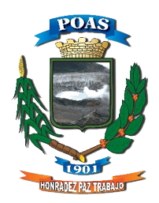

Businesses, services and tourist attractions in Poás canton. Support local.
Discover iconic dishes, restaurants with views and the best stops in the canton.

Local government of Poás canton, Alajuela. Municipal services, procedures and community management.
"Honesty, Peace, Work"
Explore the roads and tourist attractions of Poás canton. Official ICT map.
Filter by category to find what you're looking for.